Mercedes AURA
The Journey of discovery
Overview
Designing an in-car experience for Mercedes-Benz based on the brief: Journey is the destination.
Mercedes AURA is a speculative concept built with Mercedes-Benz during a semester-long studio at MOME University. Working alongside three other designers (two in interaction design, one in automotive design) I helped shape the experience layer of a vehicle built around a simple idea: let children touch, collect, and discover the world outside the window again, instead of disappearing into a screen.
The project spans exterior design language, an in-car interaction system, and a companion digital touchpoint, all tied together by one concept: tactility as the antidote to a screen-locked childhood.
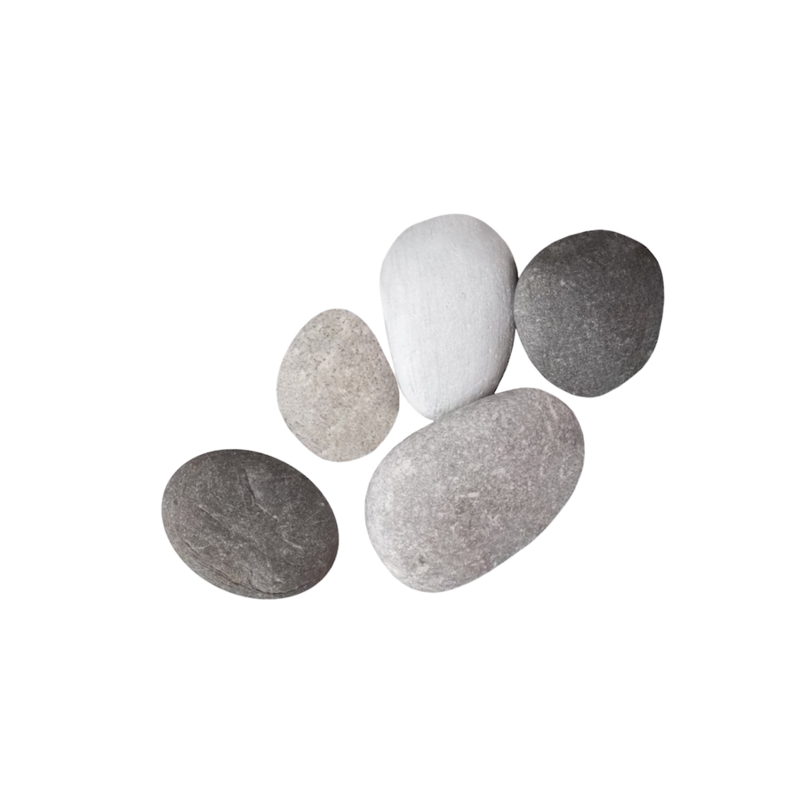
Deliverables
Concept direction, in-car UX system, device design, exterior collaboration, final presentation
Approach
Research-driven, family-centred, multisensory design
The problem
Family road trips have quietly become solo screen time.
Kids are hard to entertain during long car rides. The easiest and most common method is giving them headphones, tablets or phones. This way the landscape outside is reduced to a blur. We wanted to know what a car could do to bring that attention back outward.
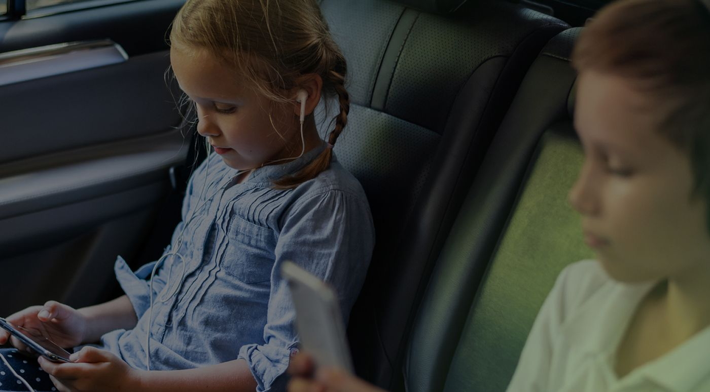
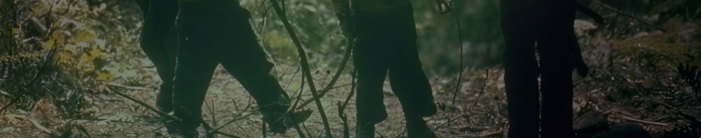
How was it, when we were children?
Insight
We asked ourselves, what was it like when we were children? We recalled a shared, almost lost memory of collecting little trinkets from nature, pinecones and pebbles. We were naturally drawn to these objects.
Based on this memory we started doing desktop research, and found out that exploring, touch and collecting is essential for a child’s healthy neural development.
“Every time a child explores a new texture, their brain physically creates the neural pathways used for lifelong problem-solving.”
— Kolb, 2012
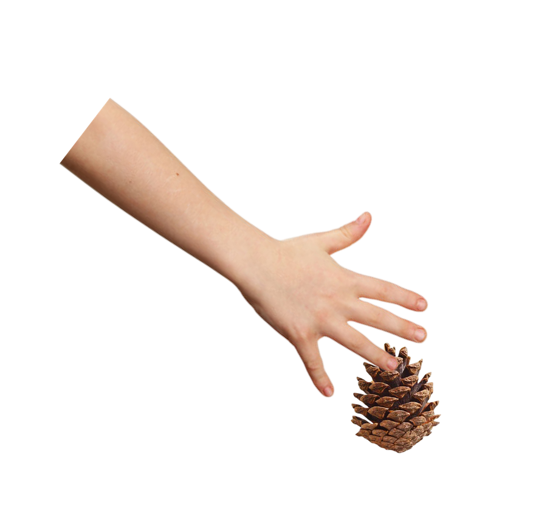
Concept
Tactility adventure
A multisensory experience for the whole family, built around a child's natural instinct to touch and collect. The car becomes a companion to exploration on the way to a destination.
User journey
Imagine the family venturing into the forest, gathering trinkets and bringing them back to the car. By scanning the object, the interior completely transforms, revealing its natural tactile patterns across the car's panels. The car becomes a magnifying glass, providing the ultimate tools for the expedition.
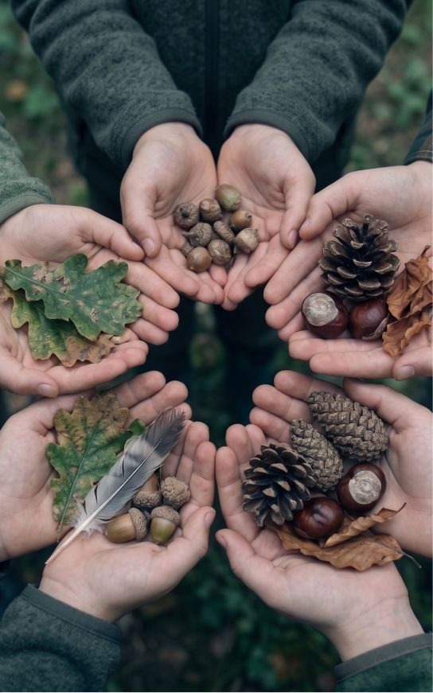
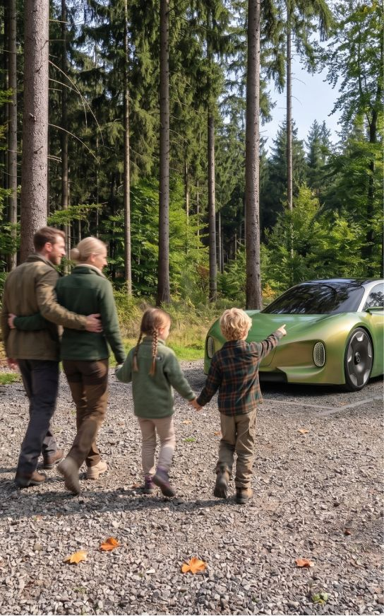
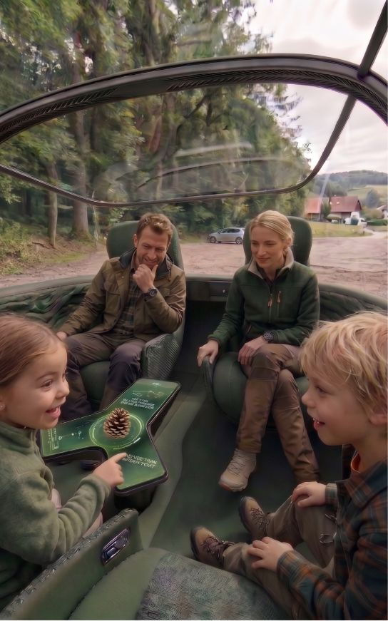
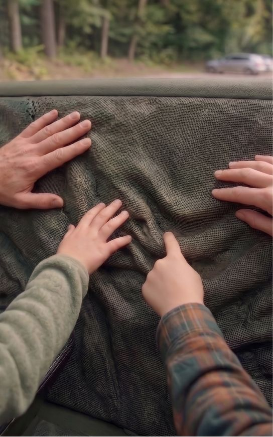
Designing for phigital
We started thinking about the shape of our centerpiece and the car inside layout as well before designing the screens.
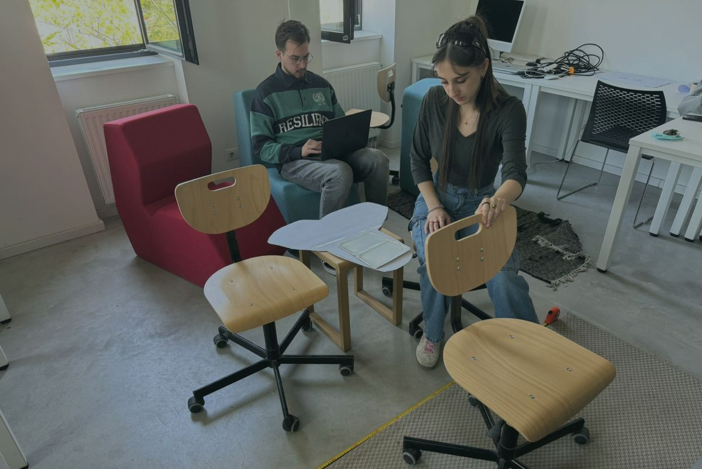
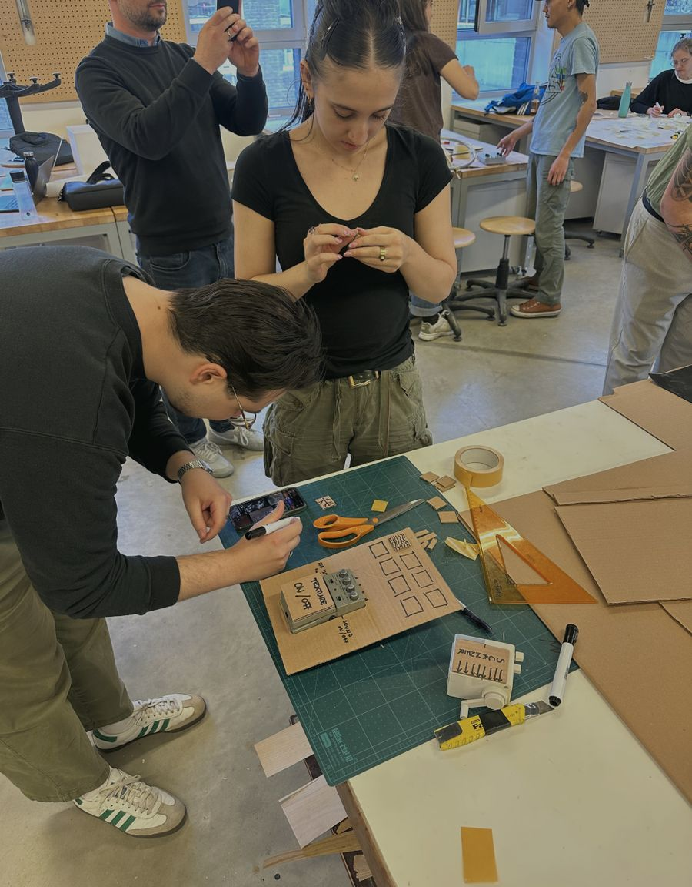
Building the system
For the in-car experience, we decided to include:
- a scanner that can read the small objects
- a digital library that can store these scanned items
- texture panels where the family can see and touch how the physical objects turn into digital ones
- ambient sounds that the car gathers during nature rides and plays back
This way the car can act as a true magnifying glass.
The final product
Introducing
Mercedes AURA
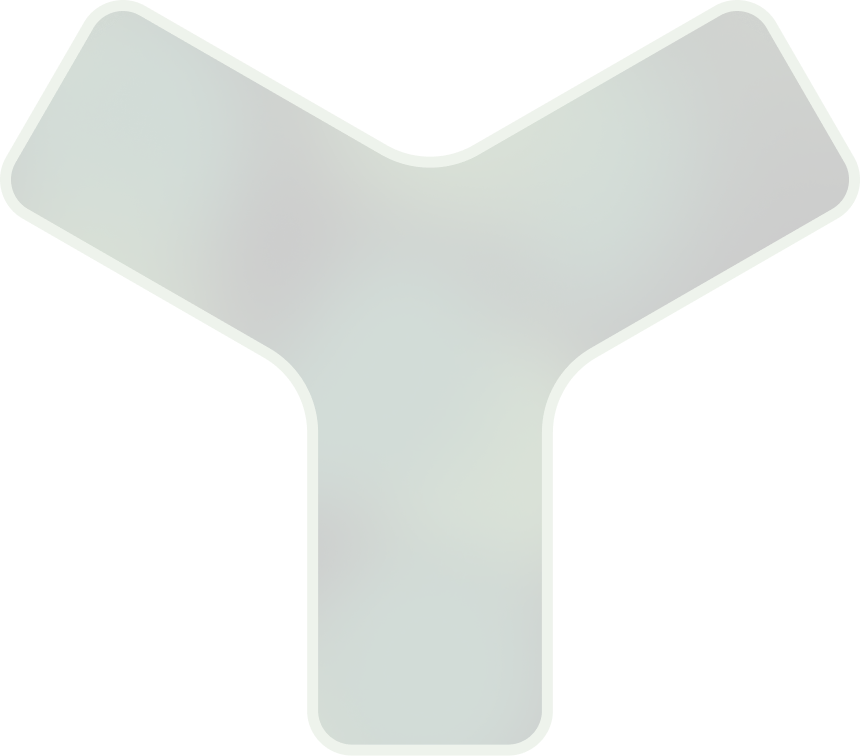
The form
The three-winged device is inspired by the Mercedes-Benz logo, and by one of the main goals we wanted to reach: bring families together during rides.
Scanning a new object
A portal scans in the object and brings it to the “other dimension”, the digital world. Then users can see the object texture in the scanned form, apply it to the car surfaces, and interact with it.
Reliving a memory
The scanned memories won’t go to waste: they will live in the digital gallery, where users can revisit them anytime they like.
Prototype
We were able to build a fully working prototype for the new item scanning flow, where the participants could witness live how their physical object becomes digital.
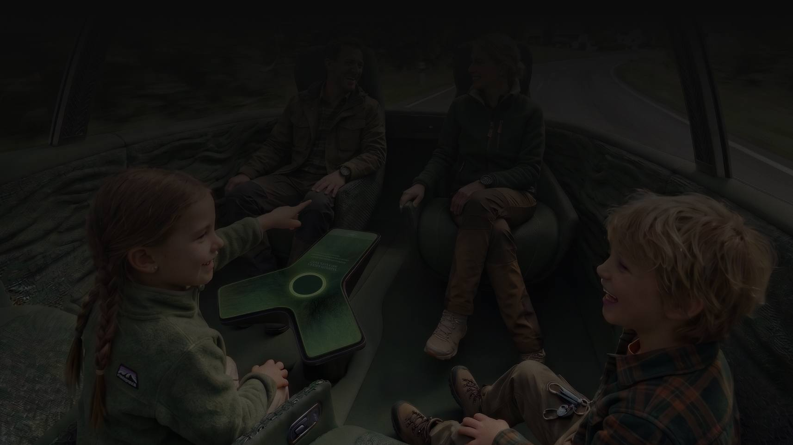
Reflection
This was my first project with a real client, and it taught me that designing for a brand like Mercedes-Benz means every idea has to fit a much bigger story. We had to balance a speculative concept with the brand’s language, and learn to explain our decisions clearly, not just show our visuals.
Working in a team of four, together with an automotive designer, showed me how closely the physical form and the digital experience depend on each other. The shape of the device came from the Mercedes star, and the screens had to follow that shape, not the other way around.
The most rewarding moment was the prototype test: watching people place a real object on the scanner and see it turn digital showed us that the idea works beyond the slides. If we continued, I would test the experience with families on a longer drive, and explore how the collected memories could be shared after the trip.
Collaborators
- Tamás Lajos Jakab
- Vladimir Borovic
- Uros Gavrilovic
- Teacher: Péter Molnár